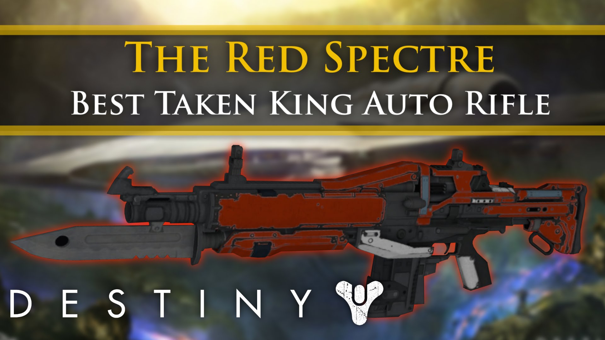
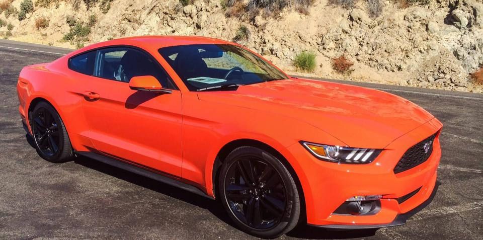

I recently stumbled upon some news about me getting terminated from my job and i was shocked but i was already prepared for such a circumstance so i did some other job applications.
Unfortunately the interviews i had were dead ends in the sense that i had plenty of opportunities but none of them were calling me back.
I thought i had essential experience for the jobs but i was proven wrong. I had been listening to podcasts and reading up on various forms of online income but they weren't any get quick results kind of jobs that my set of skills would usher cash flow.
So what i did was kept applying for jobs and as i do that i will share what i'm doing that is working and what's not.
Everyday someone awakens their entrepreneurial side whether by shock, passion or even tired of the status quo you're taking step to discovering more to life.
Destiny
Red Spectre
What is destiny? An online ps4 game that is similar to Halo but an improved and more interactive version of it. The game has three protagonist you can choose; a warlock, titan and a hunter.
You play the game with one of these characters and discover new abilities, fight of enemies, upgrade your weapon and so much more. For more information visit Destiny.
So the Red spectre is an auto rifle that i use as a warlock not the strongest but if wielded properly can cause tremendous damage especially if aiming for headshots. The gun stuns the enemy giving you an upper hand to land more shots. Its impact is not as strong as a scout rifle thus is takes extra shots to kill of your enemy but you gain an advantage over the other player/enemy.
How did I acquire it? Through hard vanguard strikes which are on the right side if the menu. I played consecutively until i was able to acquire the gun.
The game is usually random hence its usually based on luck. If you like the gun please feel free to share the word. Find me at donichigo07 on psn.
Short term goals we should all have
2016 Ford Mustang
For an individual to get to a certain point in life you have to strive to achieve it. For example we go to college and set a goal to get all A’s in a class to either acquire an internship which require a certain grade point average or a parent or guardian promises you an incentive.
 Beauty is different in any persons eyes.In my case i set a short term goal for a car , it sounds materialistic but everyone responds different to a little motivation. I love cars and this is one of my favorites. The mustang is well rounded in terms of luxury, performance and also commuting.
Unlike most sports cars the 2016 Ford Mustang ecoboost in specific offers a wide range of good qualities such as good fuel economy, a decent resale value, it's fun to drive and so much more. For more information go and check out at Ford